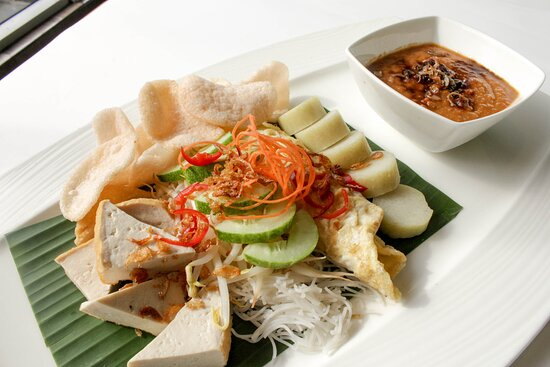

ketoprak`s Recipes

Description of ketoprak Betawi:
Ketoprak is a typical street food.
It was originally popular around the Jakarta area but has spread throughout Java.
Ketoprak consists of sliced fried tofu, steamed rice cake (lontong or ketupat), sliced cabbage and cucumber,
bihun (thin rice vermicelli), bean sprouts, served in peanut sauce, topped with krupuk and fried shallots.
ingredients
- tofu
- rice cake
- bean sprouts
- cucumber
How to make:
- Blend peanuts that have been fried, garlic, cayenne pepper,
sugar, salt, tamarind water, give a little soy sauce and water.
- Then fried tofu and diced,
then soak vermicelli and sprouts with hot water separately. Drain
- Prepare a serving plate, groceries, vermicelli, bean sprouts, tofu,
spice beans that have been in the puree and give a little soy sauce